资源
原文
Abstract
本文提出了一种用于数字图像边界多边形近似的迭代平滑技术。
1 INTRODUCTION
多边形近似有效地促进了形状表示和形状分类。主要目标是使用顶点由曲线上的点的子集指定的多边形来近似曲线的形状。这些点被称为优势点，并且通常是具有高曲率的点。
数字平面曲线的广义多边形 / 闭合曲线近似可以被视为最小 $\varepsilon $ 问题或最小 问题。
在最小 $\varepsilon $ 问题中，该技术导出具有指定数量的线段或优势点的多边形近似。这些技术确保曲线和近似多边形之间的偏差最小，条件是指定数量的优势点。这些技术生成具有最小数量优势点的近似多边形，同时确保接近度的测量不大于指定的误差。近年来，提出了许多基于优势点的多边形近似技术。
对于物体检测和形状分类应用至关重要。
2 BACKGROUND
近几十年来，已经提出了几种多边形近似技术。
- 其中一些使用各种优化方法。
- 另一方面，还有其他技术使用曲线的局部 / 全局几何特征来影响确定具有最小线段数量的多边形的过程。
3 PROPOSED WORK
3.1.1 Problem formulation
问题描述如下：
-
设
- 其中 是由离散二维空间中顺时针方向 个点组成的数字曲线。这样的曲线是使用轮廓检测或边缘检测方法从数字图像的边界提取的曲线。
- 这 个点的坐标是整数，因为这些点是从数字边界提取的。
-
的多边形近似的目的是从 的超集导出子集 ，条件是由 的元素形成的多边形应该表示原始曲线的形状。
该技术从曲线 上的任意三个连续点 、 和 开始，以检测这些点 (p_i、p_j、p_k) 的共线，即从点 到连接 和 的线段的距离。该方法应得出三点共线的结论，前提是测量的距离非常小。另一方面，如果测得的距离不是很小，因此 成为 的一个元素，则该方法应得出非共线性。因此，多边形近似技术找到了 的所有元素。利用这个问题公式，我们的论文集中于有效测度度量的选择。传统上，距离度量是从线段 上的点 下降的线的长度。这被称为垂直距离。该度量通常适用于平滑曲线，但在某些情况下（稍后解释），它可能会错过重要点并拒绝急转弯，这在形状表示应用中是必不可少的。
----(天书)---
3.1.2 Proposed technique
在本节中，我们提出了对 进行多边形近似的方法。使用 Freeman 链码获得初始分割点，如算法 1 所示。
Input：边界点的坐标。； 个边界点。
Output：初始优势点的曲线指数。
Begin
Case 1: i=0 If (x(0)-x(n-1) != x(1)-x(0)) or ((y(1)-y(0) != y(0)-y(n-1)) then D[0]= 0; Case 2: i=n-1 If (x(n-1)-x(n-2) != x(0)-x(n-1)) or (y(n-1)-y(n-2) != y(0)-y(n-1)) D[j]=i; Default: While (i<n-1) If (x(i)-x(i-1) != x(i+1)-x(i)) or (y(i+1)-y(i) != y(i)-y(i-1)) D[j] = i
End
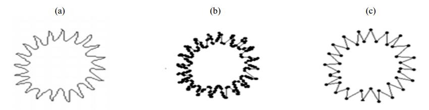
a）表示雪花形状的数字曲线
b）主点的初始集合
c）合适的多边形近似。
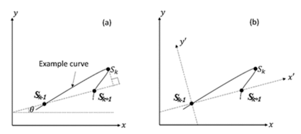
（a） 显示了原始 x-y 坐标系中的示例曲线。
（b） 除了原始x-y坐标系外，还显示了变换后的 x'-y' 坐标系
为了计算每个初始优势点 的有效测度，所提出的方法使用以下步骤。
考虑图 2（a）中的场景，即，、 和 是曲线上的三个优势点，具有以下遍历顺序：。通过假设点 的投影位于连接 的线段上，可以将其解释为这三个点共线。因此，某些近似技术可能决定放弃 。在这种情况下，点 的投影不位于其候选线段 之间。
为了将平移线段与 轴对齐，请使用计算的量角旋转线段。实际的 坐标系和新变换的坐标系如图 2（a）和图 2（b）所示。在下一步中，通过检查 的变换 坐标，该方法选择度量来计算有效度量。
- 如果 s_k’ 的 坐标小于 ，则使用下面等式计算有效测度 。
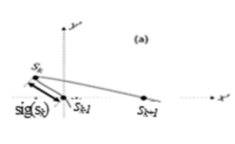
- 如果 s_k’ 的 坐标位于 和 的 坐标之间，则使用下面等式计算有效测度 。
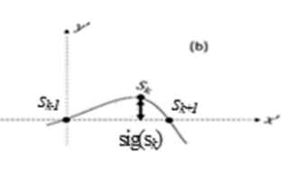
- 如果 s_k’ 的 坐标大于 的 坐标，则使用下面等式计算有效测度 。
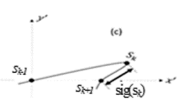
在所有三个方程（方程（1）。（2） 以及方程。（3） ）， 范围为 。（注意：重音符号表示变换后的坐标系中的坐标）。在计算与优势点相关的显著性度量时，让我们说 ，每个位于其候选线段之间的非优势点/边界点的显著性测量被累积以定义 的显著性测度。在下一步决定删除多余的优势点之前，对初始集中的每个优势点重复这些步骤。在测量了所有初始优势点的显著测度后，该方法以最小显著测度去除优势点。如果一个以上的优势点具有相同的最小显著测度，则删除序列顺序中最先出现的优势点。算法 2 中给出了去除优势点和生成最终输出多边形的步骤。
Input : 数字曲线 : 输出多边形中的主点数量 Output: 输出具有指定数量的主点 的多边形 Begin Step1 : 调用函数 CIDP Step2 : 计算与所有初始优势点相关的重要度量 Step 3: Repeat
i) 确定 中具有最小显著测度的优势点 ii) 删除主点 并重新计算 和 处的有效测度 iii) 用可用优势点计算性能度量 Until (No.of.DPs == ) End
4. Experimental results
所提出的技术在各种具有挑战性的曲线上进行了测试，以证明其有效性。给出了两个实验集的结果。
4.1.1 Quality assessment
评估多边形近似输出的最佳方法是视觉感知。因此，我们包括了大量的定性结果。此外，我们还包括了定量的性能指标，用于比较测试方法的性能，包括所提出的技术。
本文考虑以下度量来衡量结果的优度：
- 压缩比（CR），越大越好，，其中 是初始分割中的点的数量，而 是最终多边形近似中的优势点的数量。
- 积分平方误差（ISE），越小越好，，其中 是一个点的垂直距离 从多边形近似上的最近线段到原始数字曲线。
- 优值图（FOM），越大越好，
- 加权平方误差和（WE），越小越好，
- WE 的修改版本（WE2），越小越好，
4.1.1 Experiment set 1
表 2 中给出了实验集 1 中合成曲线染色体、叶片、半圆和无穷大的定量性能测量。
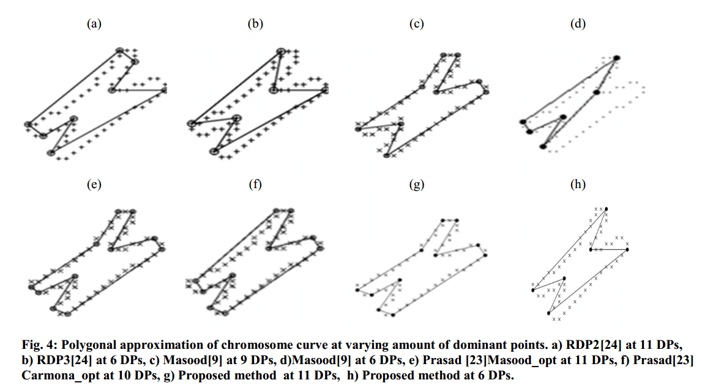
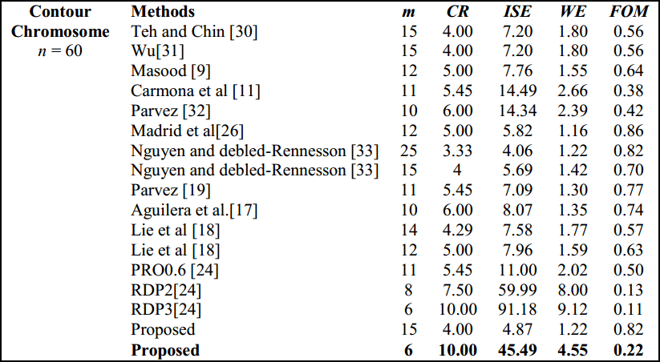
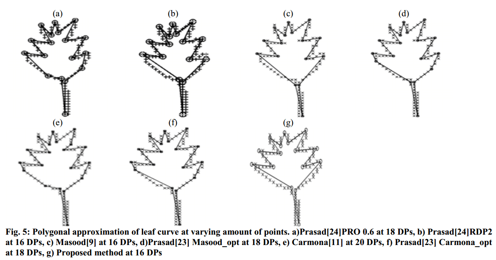
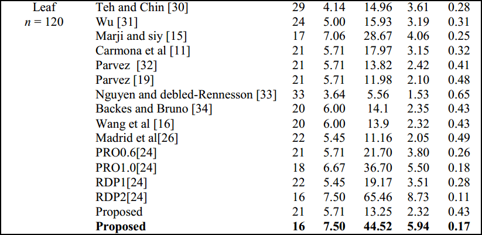
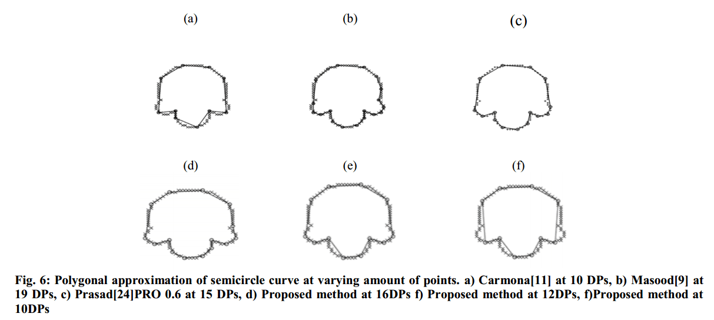
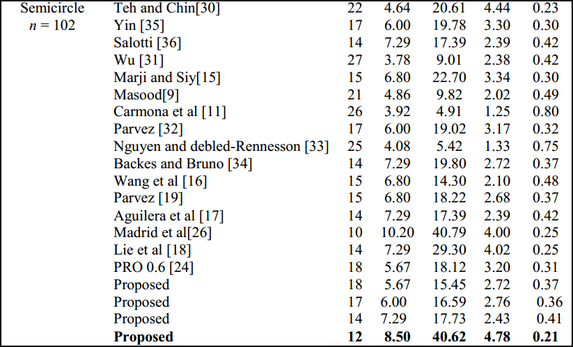
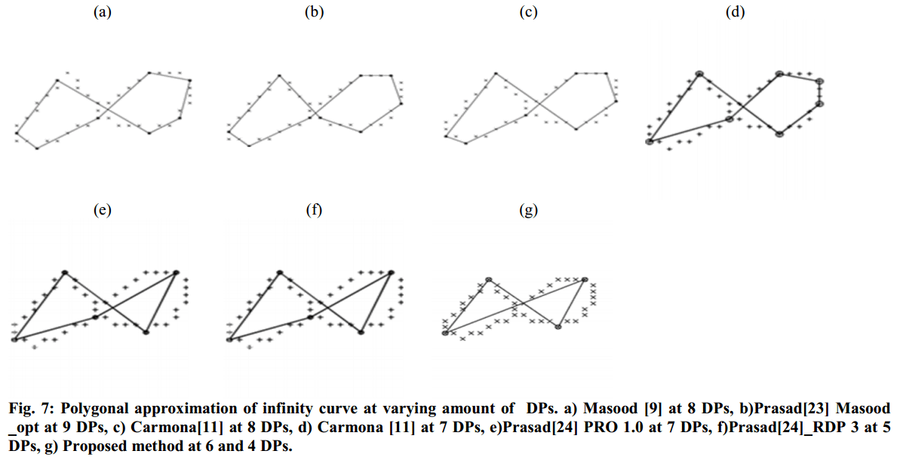
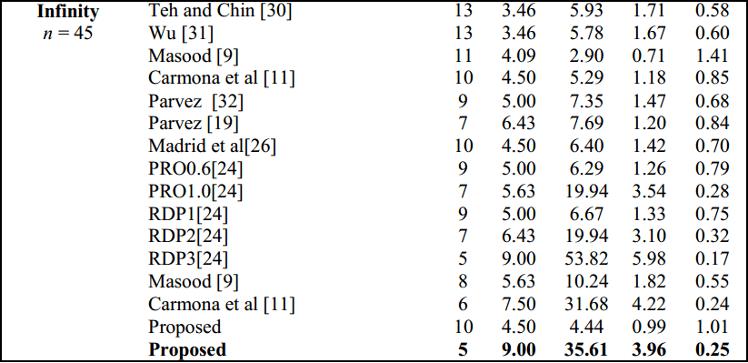
4.1.2 Experiment set 2
介绍在 MPEG 数据集中的表现。
4.1.3 Rotation Invariance
为了测试所提出的方法相对于旋转不变性的有效性，使用变量角度对 bell-7 轮廓进行旋转。然后，将旋转后的轮廓作为所提出的方法以及中的技术的输入。
5 CONCLUSION
所提出的显著性度量计算度量预测其候选线段之间的每个边界点的投影的位置，从而调用合适的显著性测量计算度量并累积其显著性度量以定义优势点的每个候选的显著性值。该技术使用各种各样的数据集进行了演示，其中图像轮廓在曲率和大小方面具有不同级别的细节。所提出的技术适用于任何计算机视觉应用，即在不影响其根据人类感知的形状的情况下产生具有最小数量点的数字边界，以及使用基准标记性能测量指标。